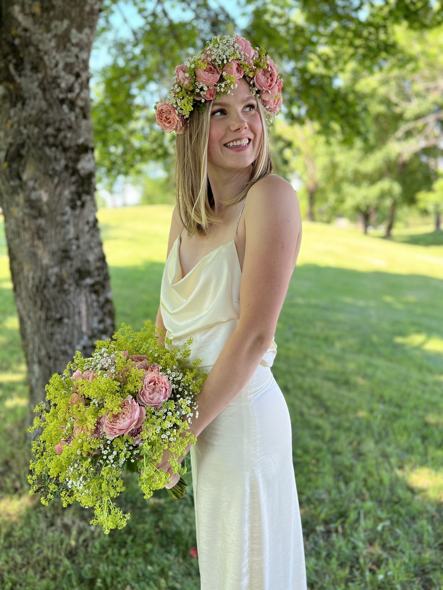

Fullstack developer
Hi, I'm Tiril Marie Pedersen Løken. A passionate game developer, ethical hacker and fullstack developer, who is based in Holmestrand, Norway. üìç

Tilbake til hovedsiden
Sjekk ut mine prosjekter!
Litt informasjon om mæ!
Hi, I'm Tiril Marie Pedersen Løken. A passionate game developer, ethical hacker and fullstack developer, who is based in Holmestrand, Norway. üìç